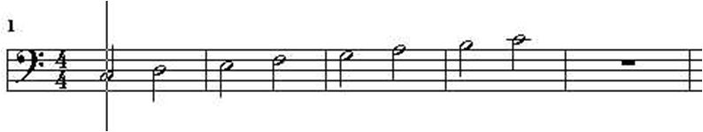

Sample C-Scales

-- All three compute the same thing, but some are
-- easier to write than others
-- The traditional route using sequential composition (:+:)
cscale1 = c 4 hn [] :+: d 4 hn [] :+: e 4 hn [] :+:
f 4 hn [] :+: g 4 hn [] :+: a 4 hn [] :+:
b 4 hn [] :+: c 5 hn []
-- All notes in a list, translated into Music using "line"
cscale2 = line
[c 4 hn [], d 4 hn [], e 4 hn [],
f 4 hn [], g 4 hn [], a 4 hn [],
b 4 hn [], c 5 hn [] ]
-- Get rid of the annoying empty noteAttribute Lists ([]) using line2
line2 list = line [ note [] | note <- list]
cscale3 = line2 [c 4 hn, d 4 hn, e 4 hn,
f 4 hn, g 4 hn, a 4 hn,
b 4 hn, c 5 hn ]